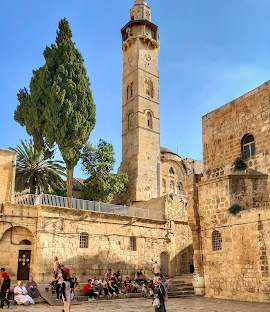
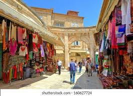

A Critical Research Archive
Stand for Gaza is an independent collection of historical guides, legal analysis frameworks, and media source archives built for researchers.
Crowdfund Infrastructure
Synchronizing tracking ledgers...
Understanding the context of the region requires analyzing it through foundational structural realities, not simple regional border clashes.
Since the profound escalation of the conflict, the human cost has reached unprecedented and devastating levels.

For many Palestinians, the overarching geopolitical conflict is secondary to the immediate battle for basic needs.
Database Catalog
Evaluating regional territorial reconfigurations and structural demographic policies utilizing standard sociological models.
The human cost has reached unprecedented and devastating levels. A breakdown of the catastrophic human tragedy unfolding.
A tightening siege and severely degraded infrastructure have transformed routine life into a relentless pursuit of essential resources.
Thousands of Palestinian minors have perished, but the millions who survive are bearing the heavy, invisible wounds of deep trauma.
The Palestinian refugee crisis remains one of the longest unresolved displacement crises in modern history, shaped by decades of conflict.

An elaborate, pervasive system of physical and bureaucratic restrictions systematically choke movement and access to basic human rights.
Deck summary descriptions populate here.
Lead paragraph layout text content.
Contribute peer-reviewed historical guides or international legal source documentation drafts.